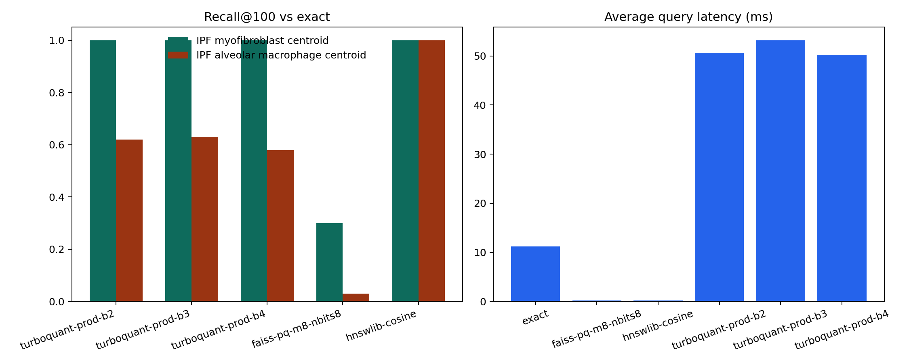

Executed SCimilarity-space benchmark with explicit input, process, and output traceability.
This page shows the full chain for TurboCell Atlas on the public SCimilarity tutorial dataset: what the input dataframe contains, how the data are processed, how queries are built, how candidate generation and exact reranking interact, and what tables and figures are produced.
Background and Objective
TurboCell Atlas separates representation quality from retrieval efficiency. SCimilarity provides the biologically meaningful embedding space. TurboQuant compresses candidate generation. Exact reranking restores the final ranking in the original embedding space.
This benchmark evaluates two centroid queries on the public SCimilarity tutorial dataset: a compact IPF myofibroblast query and a broader IPF alveolar macrophage query.
Input
The analysis starts from GSE136831_subsample.h5ad, a dataset with 50,000 cells and 44,942 genes. The executed field-level dictionary is written to artifacts/real_data_case_study/input_data_dictionary.csv.
| Field | Table | Role |
|---|---|---|
celltype_name | obs | query construction and hit interpretation |
Disease | obs | query construction and disease enrichment summary |
sample | obs | sample-level metadata context |
study | obs | study provenance |
cell_id | derived obs | stable output identifier |
query_group | derived obs | group label for query provenance |
X | AnnData matrix | SCimilarity-preprocessed expression matrix |
embedding | derived matrix | 128-dimensional retrieval representation |
Process
GSE136831_subsample.h5ad
-> obs metadata summary + counts-derived matrix
-> SCimilarity gene alignment
-> per-10k normalization + log1p
-> SCimilarity encoder embeddings
-> L2 normalization
-> centroid query construction
-> exact / HNSW / FAISS-PQ / TurboQuant candidate search
-> exact reranking for TurboQuant candidates
-> benchmark tables, figures, logs, and notebooksThe executed stage table is written to artifacts/real_data_case_study/pipeline_stages.csv.
| Stage | Name | Output | Display artifact |
|---|---|---|---|
| 1 | load_input_h5ad | AnnData with counts-derived matrix and obs metadata | input dataset summary |
| 2 | align_to_scimilarity_gene_order | gene order aligned to SCimilarity | pipeline stage table |
| 3 | scimilarity_preprocess | per-10k log1p matrix | methods section and notebook |
| 4 | embed_cells | 50,000 x 128 embedding matrix | embedding summary table |
| 5 | construct_queries | centroid query vectors | query definition table |
| 6 | candidate_generation | method-specific candidate pool | candidate vs rerank table |
| 7 | exact_rerank_or_baseline_return | ranked top hits | top hits table |
| 8 | reporting | CSV, JSON, JSONL, PNG, Markdown, notebooks | artifact index |
Query provenance
The executed query provenance is written to artifacts/real_data_case_study/query_definitions.csv.
| Query | Disease | Cell type | Source cells | Query mode |
|---|---|---|---|---|
IPF myofibroblast centroid | IPF | myofibroblast cell | 458 | focused |
IPF alveolar macrophage centroid | IPF | alveolar macrophage | 4,389 | broad |
Candidate generation and reranking
The executed comparison is written to artifacts/real_data_case_study/candidate_rerank_comparison.csv. This table shows how large the TurboQuant candidate set was and how much exact reranking recovered versus the exact baseline.
| Query | Method | Query mode | Candidate count | Recall@100 | Top-20 overlap |
|---|---|---|---|---|---|
IPF myofibroblast centroid | turboquant-prod-b2 | focused | 2048 | 1.00 | 1.00 |
IPF myofibroblast centroid | turboquant-prod-b3 | focused | 2048 | 1.00 | 1.00 |
IPF myofibroblast centroid | turboquant-prod-b4 | focused | 2048 | 1.00 | 1.00 |
IPF alveolar macrophage centroid | turboquant-prod-b2 | broad | 8192 | 0.62 | 0.70 |
IPF alveolar macrophage centroid | turboquant-prod-b3 | broad | 8192 | 0.63 | 0.60 |
IPF alveolar macrophage centroid | turboquant-prod-b4 | broad | 8192 | 0.58 | 0.65 |
Output
The final benchmark figure is generated as artifacts/real_data_case_study/benchmark_summary.png.

The final benchmark table is written to artifacts/real_data_case_study/benchmark_summary.csv.
| Query | Method | Recall@100 | Avg latency (ms) | Candidate memory (MB) |
|---|---|---|---|---|
IPF myofibroblast centroid | exact | 1.00 | 11.98 | 24.41 |
IPF myofibroblast centroid | turboquant-prod-b2 | 1.00 | 53.71 | 1.72 |
IPF myofibroblast centroid | turboquant-prod-b3 | 1.00 | 47.34 | 2.48 |
IPF myofibroblast centroid | turboquant-prod-b4 | 1.00 | 45.35 | 3.24 |
IPF myofibroblast centroid | faiss-pq-m8-nbits8 | 0.30 | 0.17 | 0.51 |
IPF myofibroblast centroid | hnswlib-cosine | 1.00 | 0.12 | 31.69 |
IPF alveolar macrophage centroid | exact | 1.00 | 10.46 | 24.41 |
IPF alveolar macrophage centroid | turboquant-prod-b2 | 0.62 | 47.51 | 1.72 |
IPF alveolar macrophage centroid | turboquant-prod-b3 | 0.63 | 59.07 | 2.48 |
IPF alveolar macrophage centroid | turboquant-prod-b4 | 0.58 | 55.03 | 3.24 |
IPF alveolar macrophage centroid | faiss-pq-m8-nbits8 | 0.03 | 0.27 | 0.51 |
IPF alveolar macrophage centroid | hnswlib-cosine | 1.00 | 0.35 | 31.69 |
The concrete ranked outputs live in artifacts/real_data_case_study/top_hits.csv, and the complete artifact catalog lives in artifacts/real_data_case_study/artifact_index.csv.
Interpretation
For the compact IPF myofibroblast query, TurboQuant preserved the exact top-100 neighborhood while shrinking the candidate layer substantially. For the broader IPF alveolar macrophage query, adaptive planning improved quality but did not close the gap to exact or HNSW.
This means the project now demonstrates a complete retrieval story: the input dataframe is documented, the processing stages are enumerated, candidate generation and reranking are visible, and the final answer tables and figures are linked directly to the executed run.